Table of Contents
Flight Computer PCB Development
Programming the Flight Computer with AVR C
Introduction
While browsing YouTube one day, I came across a channel called BPS.Space.
At the time (the channel does many rocket-things now), it was about building model rockets which could stabilize themselves using Thrust Vector Control (TVC).
Thrust Vectoring is when a vehicle (like a rocket or plane) manipulates the direction of its thrust to change its direction and angular velocity.


The channel inspired me to build my own TVC rocket. This page is a documentation of my progress, as well as why and how I do things on this project. I will update it periodically.
Engine Mount Development
(February 4th, 2023)
As of now, I nearly have a fully finished (prototype) version of the engine mount. The servos are not yet connected, and part of the arm is broken. I plan to finish and test it soon.
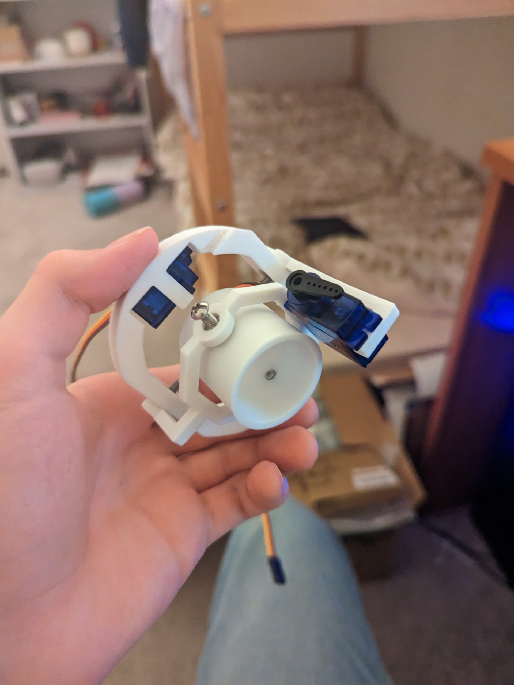So far, every 3D printed part of this rocket has been designed in Tinkercad. Though maybe not the most professional option, it does everything I need it to do efficiently, conveniently, and for free. All the parts are printed on my Creality Ender 3 Pro:
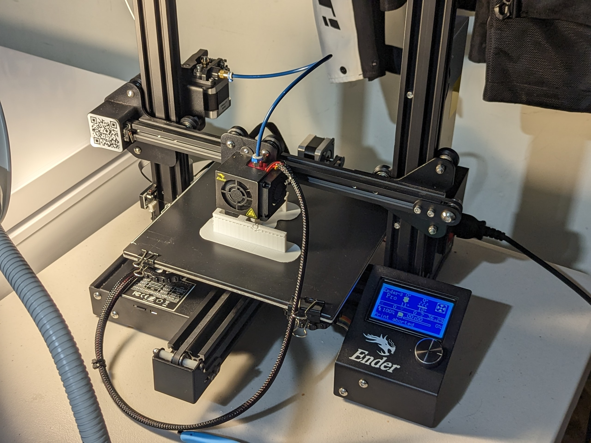When I had first started designing, I planned to design everything separately, and so I began with the main ring that would be connected to the body tube:
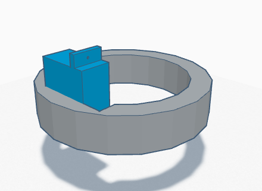At the time, I had not used much CAD, so it was very rough. After printing it I quickly realised I couldn't even fit a screwdriver to mount the servo. Some versions of just the ring later, I "got distracted" by other projects. But through those, like from this fully automatic rubber band gun with removable magazines:
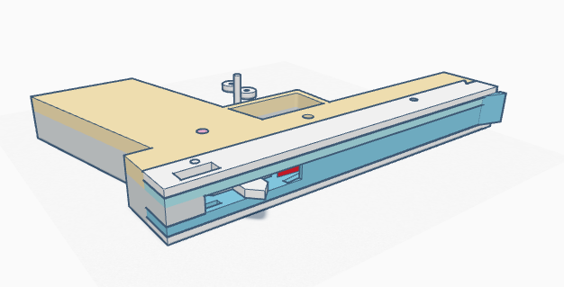I gained a lot of design experience. After finding a datasheet with the servo dimensions, I was able to design a new version fairly quick and without much trouble, despite the unusual round space constraints of the rocket body. (The green arm is actually not its first iteration. It used to be mounted on only one side, which would bend under pressure).
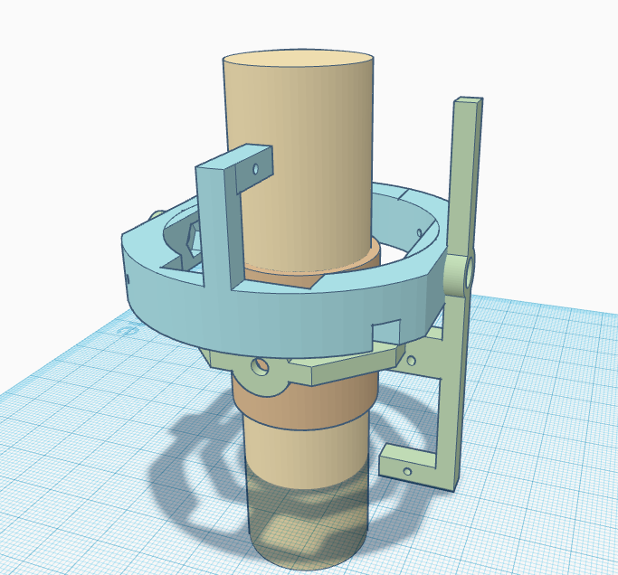The small darker brown ring in the center will hold the 29mm Estes motor I plan to use (represented as the tan cylinder). The motor can either be glued into the ring, friction fitted by increasing its radius with electrical tape, compressed from the side by further tightening the screws holding the ring, or a combination of these methods. The ring is small so it can be thrown away (if the motor is glued in) and reprinted quickly. The servo on the arm would be connected with a rod to the brown ring, and the servo on the bigger ring to the arm, making for X and Y rotation.
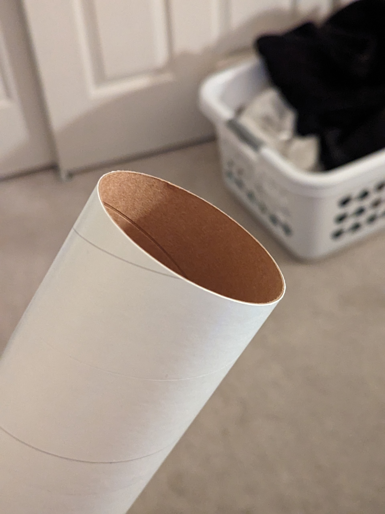The part connection mechanism is pretty simple but neat. A nut is inserted into a slot (that is not the full depth of the part) and then you essentially achieve a threaded hole which is much stronger and more precise (higher resolution) than could be 3D printed. You can then screw in a screw. (Not my idea, I found it on some forum a while back.)
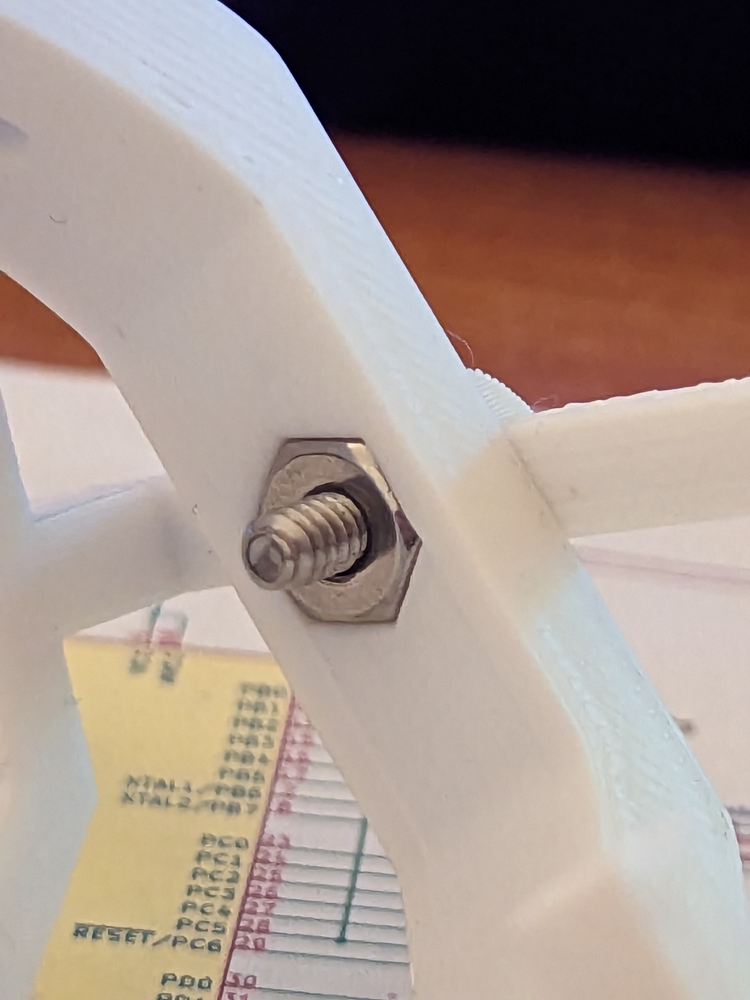The plastic parts will be connected to the servos using stiff metal wire shaped into arms.

Unfortunately, my printer was not cooperating, and it would take many attempts to print everything. Eventually (after much trouble shooting, changing the bowden tube, and fixing other under extrusion issues) I had everything printed, except for the green arm. Not only would this part fail multiple times half way through, but I kept breaking it while taking off supports.
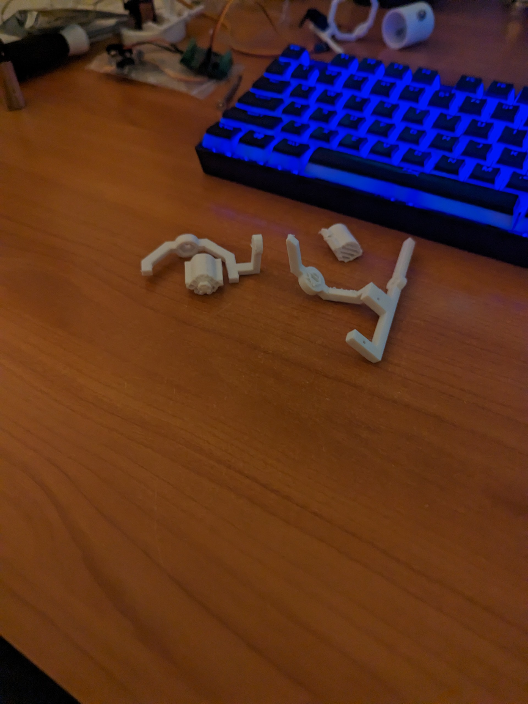 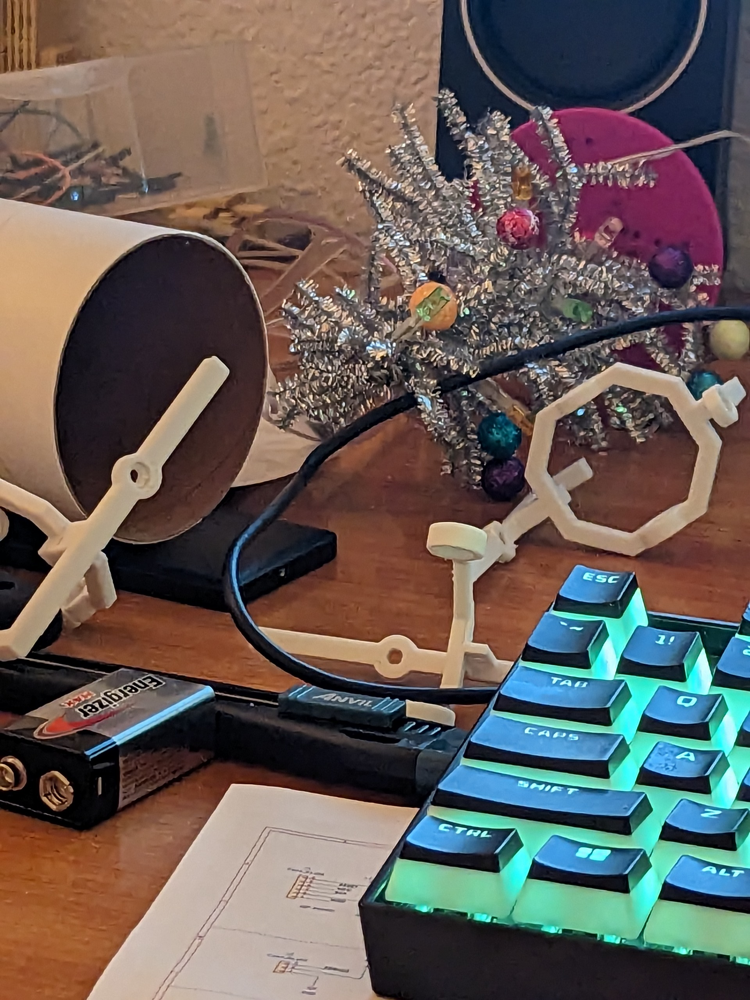After some trial and error, I eventually got an intact one, but ignorantly over tightened one of the screws, and tore through the plastic:
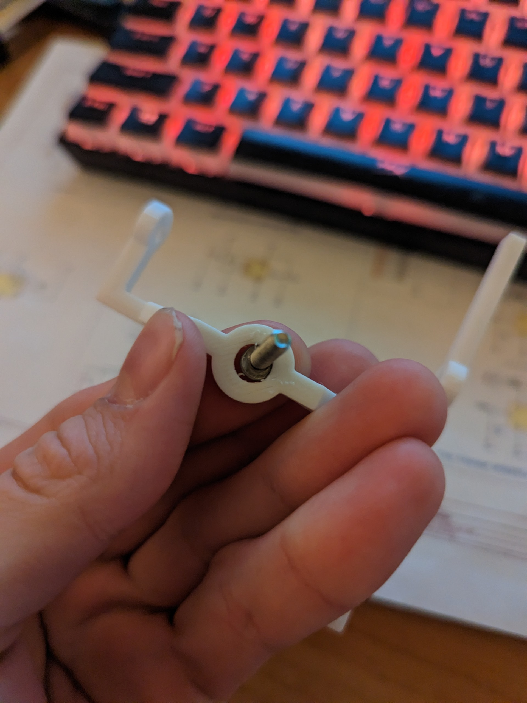This is where I'm at with the mount at the moment (the over tightened arm is actually the one used in the first picture where it's assembled, because it still works, just not ideally). The next step would be to reprint the arm, put all three pieces together, and test its motion with a lit engine and my flight computer at the helm.
Flight Computer PCB Development
(February 17th, 2023)
Schematic Design
So far, the most interesting part of this project has been the electrical side of things. I have been able to design a schematic, route a board, send it to get fabricated, assemble it, (troubleshoot a short,) and program it to do some things.

I started off the design of this computer by researching what other people have done. I wanted my computer to be able to control two servos and have some sensors to "know where it is". I also needed way to store data, a way of debugging/indication, and a way of firing electric matches for parachutes or other engines. Of course, I would also need some sort of microcontroller to do the processing. Referencing sites like the rocketry Reddit, some Youtube videos, and using the part picker (and datasheets) on sites like Digikey and Mosuer, I picked out components that I thought would fit my needs, and began designing the schematic.
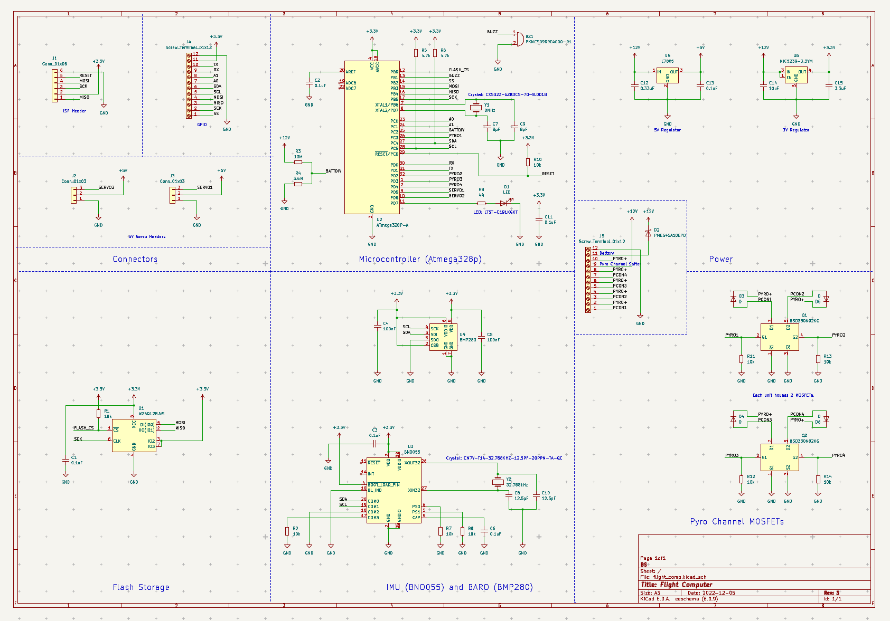I'll discuss later how some of the choices were suboptimal and the changes I plan to make on a second version later.
The design process basically went like this: Make a list of things I want it to do, learn about the what components would be required to do that, place everything out, connect them all on the schematic, and then do board layout/routing. Of course, there are lots of smaller steps in between all of these, like making symbols and footprints for the schematic and layout, or configuring the board routing settings so that they fit what the manufacturer can do.
Microcontroller
The microcontroller I chose is the "famous" ATMega328P, though in reality it is sort of suboptimal. For one, it's NRND, and it's rather slow. It also doesnt have a lot of GPIO. I chose it primarily since at the beginning I was pretty clueless on this topic, and since its the microcontroller used on Arduinos, I figured there would be a lot of schematics I could reference off of. While that would turn out to be true, I would learn that all the information I need is in the datasheet. I would end up still having to base my design in part from info off the datasheet. For example, I used an 8MHz crystal since that's what the datasheet specified it needs when running at 3.3V, while the 5V arduino uses a 16MHz crystal. (I'm using it with 3.3V rather than the 5V like the Arduino, because everything else uses 3.3V logic and having 20 level shifters or an IC to shift it would be way more complicated and rather silly.)
As for the other components, It was more or less the same process. I would figure out what pins do what on each IC, and then most of the datasheets would at minimum have a design and layout consideration section. Some would even have an example schematic for the configuration you need it in (I2C, SPI, etc.).
MOSFETs
Before settling on MOSFETs, I was considering using relays, but discovered that since they are mechanical switches, they can activate unexpectedly in high vibration enviorments (like a rocket...). It took me a while to understand what MOSFETs I would need to accomplish my goal. Through referencing the graphs in the datasheets and using this video to learn what ratings like "Vgsth" mean, I eventually found a MOSFET package that fit. (It's actually two in one package because I wanted to lower part count.)
The circuit I use for the MOSFETs isn't actually very safe. The reason is, I completely neglected to add a current limiting resistor. If I were to accidentally short two leads with the MOSFET "on", it would fry itself and maybe overheat other parts of the board. This is rather simple to fix, as all you need to do is find the firing current of the ematch and use Omh's Law to calculate its value with the power source. It would also be good to have continuity detection connected straight to a pin in the IC, but I had limited GPIO with this processor. (Another thing I changed on the 2nd version schematic so far.) For now though, the terminal blocks I use for GPIO and the pyro channels have pads on the back specifically so you can check continuity with a multimeter.
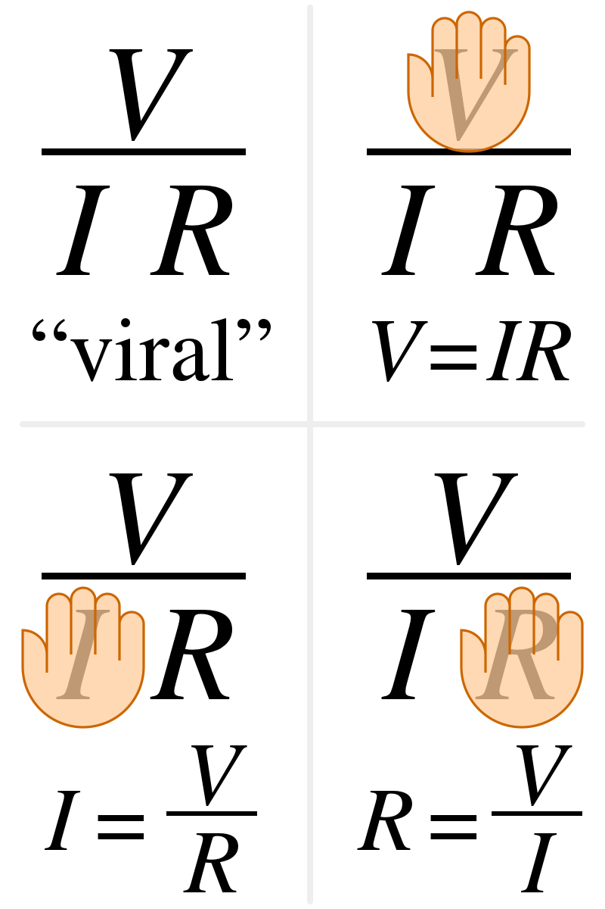Voltage Regulators
The voltage regulators I chose also required some non-obvious considerations. At first, I thought simply choosing a regulator that was rated for a specific current would mean I could pull that current. It turns out though, that linear voltage regulators are very inefficient, and create a TON of heat with larger current. And as it turns out, servos draw a lot of current. But after measuring the max current draw of the two servos (by very scientifically holding the horn as tight as I can with it moving while using a multimeter) and reading this page, the datasheet said it would survive. If the current load were higher though, you would need something like a switching regulator instead.
Sensors and Other Components
I essentially chose sensors and a flash chip by if I was already familiar with them, since I already knew what their capabilities were (for example how much noise they have or how many Gs they can take). This was a mistake. I ended up using a BMP280, which is obsolete. I had already ordered the board when I realised, so I had to buy a breakout board and rip it off that. Considering that the specs of the BMP280 aren't even that great now days, I definitely learned my lesson about checking part availability.
Current Schematic for the Version 2
Routing
Routing the board was by far the most challenging part of this project. It would take many attempts and trying different techniques to get right.